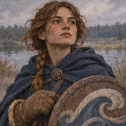
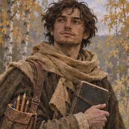
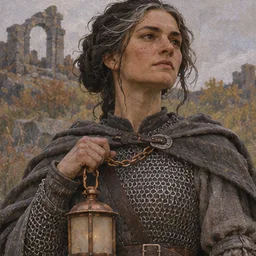
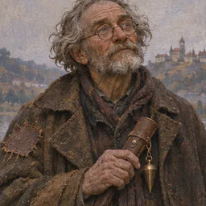
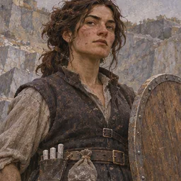
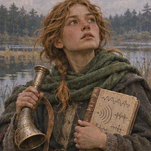
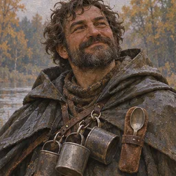

Лада Ровень
воин 3 · ОЗ 31 · КД 11 · Скорость 30 фтИсследовательница отражённых улиц
Синий плащ, широкие рукавицы и дорожный щит с рисунком волны.
Тебя часто называют той, кто всегда поможет. Ты хочешь узнать, можно ли заслуживать доверия и при этом спокойно отказывать.
Открыть фигурку для поля
Оружие и заклинания
Оружие · Длинный меч, Ручной топор

Ярин Таль
плут 3 · ОЗ 24 · КД 13 · Скорость 30 фтКурьер и внимательный собеседник
Песочный шарф, сумка с карандашами и записная книжка в непромокаемой обложке.
Ты принёс к фонарю письмо и услышал ответ, который был похож на заранее написанный. Теперь хочешь отличать настоящий разговор от удобного пересказа.
Открыть фигурку для поля
Оружие и заклинания
Оружие · Рапира, Короткий лук

Мерет Иль
жрец 3 · ОЗ 24 · КД 11 · Скорость 30 фтФонарщица и хранительница памятных обрядов
Серое платье под дорожной кольчугой и матовый фонарь на медной цепочке.
Ты умеешь сохранять добровольные впечатления и не обещаешь ими вернуть человека. Появившийся собеседник заставляет пересмотреть пределы ремесла.
Открыть фигурку для поля
Оружие и заклинания
Оружие · Боевой посох
Заклинания · Лечащее слово, Обнаружение магии

Оден Соль
волшебник 3 · ОЗ 20 · КД 12 · Скорость 30 фтИсследователь невозможных наблюдений
Потёртое пальто, круглые очки и короткий отвес в кожаном футляре.
Ты привык исправлять ошибки в чужих схемах. Здесь предстоит заметить, когда ошибочно само желание получить единственно правильный ответ.
Открыть фигурку для поля
Оружие и заклинания
Оружие · Боевой посох
Заклинания · Обнаружение магии, Туманный шаг

Эста Нив
воин 3 · ОЗ 31 · КД 11 · Скорость 30 фтРезчица памятных надписей
Тёмный жилет, пояс с мелом и каменной пылью, простой щит без герба.
Ты замечаешь, как краткая надпись способна превратить целую жизнь в одну удобную черту. Хочешь услышать ответ того, о ком пишут.
Открыть фигурку для поля
Оружие и заклинания
Оружие · Длинный меч, Ручной топор

Рина Тесс
волшебник 3 · ОЗ 20 · КД 12 · Скорость 30 фтИсследовательница эха
Зелёный шарф, металлический рожок и тетрадь с условными значками звуков.
Ты услышала, как знакомая фраза меняет смысл после настоящего вопроса. Тебе важно не заставить человека отвечать, а оставить место новому ответу.
Открыть фигурку для поля
Оружие и заклинания
Оружие · Боевой посох
Заклинания · Обнаружение магии, Туманный шаг

Корвин Лугов
плут 3 · ОЗ 24 · КД 13 · Скорость 30 фтПовар и устроитель спокойных встреч
Непромокаемый плащ, несколько кружек и ложка в мягком чехле.
За твоим столом часто говорят, что всё хорошо, когда это не так. Ты хочешь научиться предлагать заботу без обязанности принять её.
Открыть фигурку для поля
Оружие и заклинания
Оружие · Рапира, Короткий лук